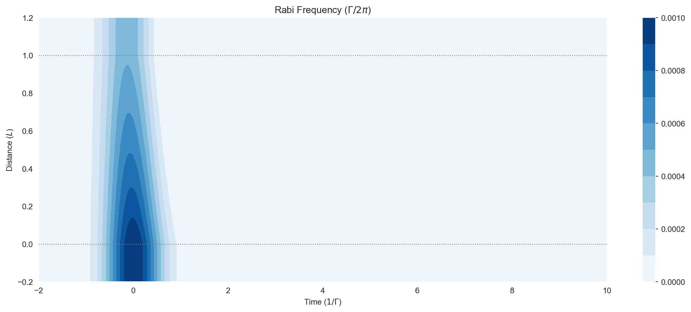
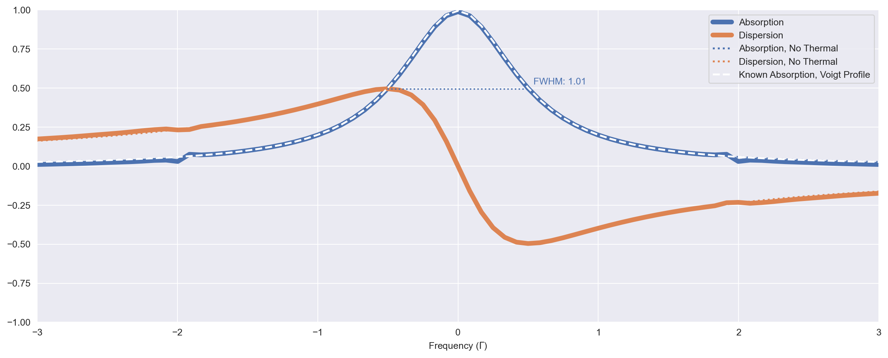
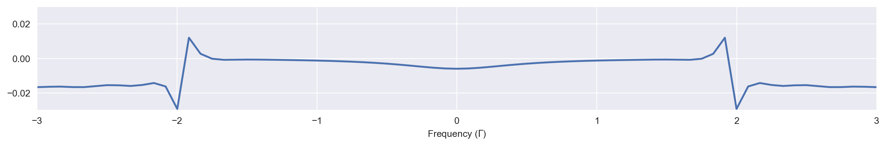

# Imports for plotting
import matplotlib.pyplot as plt
%matplotlib inline
import numpy as np
import seaborn as sns
sns.set_style("darkgrid")Velocity Classes for Modelling Doppler Broadening in Thermal Systems
So far the models we have considered are appropriate for ultracold systems with close-to-stationary atoms. For thermal atoms we might want to consider the averaging effect of motion in the line of propagation.
An atom moving with a velocity component \(v\) in the \(z\)-direction will interact with a Doppler-shifted field frequency \(\omega - kv\). This shift is effected over a 1D Maxwell-Boltzmann probability distribution function of velocity
\[ f(v) = \frac{1}{u\sqrt{\pi}} \mathrm{e}^{-(kv/u)^2} \]
where the thermal width \(u = kv_w\), \(k\) is the wavenumber of the monochromatic field and \(v_w = 2k_b T/ M\) is the most probable speed of the Maxwell-Boltzmann distribution for a temperature \(T\) and atomic mass \(m\).
In clerq we model this by solving the system over a range of velocity_classes, each detuning the system from resonance. The results are convoluted over the Maxwell-Boltzmann distribution. The thermal width is provided in thermal_width in the same \(2\pi~\Gamma\) units as the decays and rabi_freqs. We provide velocity classes from thermal_delta_min to thermal_delta_max, again in units of \(2\pi~\Gamma\). The number of classes we choose to solve is given in thermal_delta_steps.
mb_solve_json = """
{
"system": {
"decays": [
{
"channels": [[0, 1]],
"rate": 1.0
}
],
"fields": [
{
"coupled_levels": [[0, 1]],
"rabi_freq": 1.0e-3,
"rabi_freq_t_args": {
"ampl": 1.0,
"centre": 0.0,
"fwhm": 1.0
},
"rabi_freq_t_func": "gaussian"
}
],
"num_states": 2
},
"t_min": -2.0,
"t_max": 10.0,
"t_steps": 1000,
"z_min": -0.2,
"z_max": 1.2,
"z_steps": 50,
"interaction_strengths": [
0.5
],
"velocity_classes": {
"thermal_delta_min": -0.1,
"thermal_delta_max": 0.1,
"thermal_delta_steps": 4,
"thermal_width": 0.05
},
"savefile": "velocity-classes"
}
"""from clerq import PropagationSolver, utility
mbs = PropagationSolver().from_json_str(mb_solve_json)We can check the set of velocity classes we’ve defined:
mbs.thermal_delta_list / (2 * np.pi)array([-0.1 , -0.05, 0. , 0.05, 0.1 ])The weights of the Maxwell-Boltzmann distribution at these deltas is given by:
mbs.thermal_weightsarray([0.03289253, 0.6606641 , 1.79587122, 0.6606641 , 0.03289253])And so we can plot the numerical approximation to the Gaussian Maxwell-Boltzmann distribution:
maxboltz = utility.maxwell_boltzmann(
mbs.thermal_delta_list, 2 * np.pi * mbs.velocity_classes["thermal_width"]
)
plt.plot(mbs.thermal_delta_list, maxboltz, marker="o");
It is useful to look at what the numerical integration looks like for these velocity classes. If it is close to 1, the thermal distribution should be well covered.
np.trapezoid(mbs.thermal_weights, mbs.thermal_delta_list)np.float64(0.9896305736453971)Now we can solve as before. Now at each \(z\)-step, the system will be solved thermal_delta_steps times, once for each velocity class, and so the time taken to solve scales linearly.
Omegas_zt, states_zt = mbs.solve(recalc=False)Saving PropagationSolver to velocity-classes.quResults in the Time Domain
fig = plt.figure(1, figsize=(16, 6))
ax = fig.add_subplot(111)
cmap_range = np.linspace(0.0, 1.0e-3, 11)
cf = ax.contourf(
mbs.tlist,
mbs.zlist,
np.abs(mbs.rabi_freqs_zt[0]),
cmap_range,
cmap=plt.cm.Blues,
)
ax.set_title(r"Rabi Frequency ($\Gamma / 2\pi $)")
ax.set_xlabel(r"Time ($1/\Gamma$)")
ax.set_ylabel("Distance ($L$)")
for y in [0.0, 1.0]:
ax.axhline(y, c="grey", lw=1.0, ls="dotted")
plt.colorbar(cf);
Results in the Frequency Domain
For a two-level system in the linear regime, this convolution of a Lorentzian function with a Gaussian can be determined analytically and is known as a Voigt profile. It is provided in clerq as spectral.voigt_two_linear_known(freq_list, decay_rate, thermal_width) so we can compare the simulation solution with the known analytic result. The function returns the profile for unit interaction strength, so we multiply by the interaction strength of our medium.
from clerq import spectral, utilityinteraction_strength = mbs.interaction_strengths[0]
decay_rate = mbs.system.decays[0]["rate"]
freq_list = spectral.freq_list(mbs)
absorption_linear_known = spectral.absorption_two_linear_known(
freq_list, interaction_strength, decay_rate
)
dispersion_linear_known = spectral.dispersion_two_linear_known(
freq_list, interaction_strength, decay_rate
)
fig = plt.figure(4, figsize=(16, 6))
ax = fig.add_subplot(111)
pal = sns.color_palette("deep")
ax.plot(
freq_list, spectral.absorption(mbs, 0, -1), label="Absorption", lw=5.0, c=pal[0]
)
ax.plot(
freq_list, spectral.dispersion(mbs, 0, -1), label="Dispersion", lw=5.0, c=pal[1]
)
ax.plot(
freq_list,
absorption_linear_known,
ls="dotted",
c=pal[0],
lw=2.0,
label="Absorption, No Thermal",
)
ax.plot(
freq_list,
dispersion_linear_known,
ls="dotted",
c=pal[1],
lw=2.0,
label="Dispersion, No Thermal",
)
# Widths
hm, r1, r2 = utility.half_max_roots(freq_list, spectral.absorption(mbs, field_idx=0))
plt.hlines(y=hm, xmin=r1, xmax=r2, linestyle="dotted", color=pal[0])
plt.annotate(
"FWHM: " + "%0.2f" % (r2 - r1),
xy=(r2, hm),
color=pal[0],
xycoords="data",
xytext=(5, 5),
textcoords="offset points",
)
# voigt_two_linear_known returns the profile for unit interaction strength;
# the linear-regime absorption is proportional to the interaction strength.
voigt = interaction_strength * spectral.voigt_two_linear_known(freq_list, decay_rate, 0.05).imag
ax.plot(
freq_list,
voigt,
c="white",
ls="dashed",
lw=2.0,
label="Known Absorption, Voigt Profile",
)
ax.set_xlim(-3.0, 3.0)
ax.set_ylim(-1.0, 1.0)
ax.set_xlabel(r"Frequency ($\Gamma$)")
ax.legend();
# Plot residuals
fig = plt.figure(figsize=(16, 2))
ax = fig.add_subplot(111)
ax.plot(
freq_list,
spectral.absorption(mbs, 0, -1) - voigt,
label="Absorption",
lw=2.0,
c=pal[0],
)
ax.set_xlim(-3.0, 3.0)
ax.set_ylim(-3e-2, 3e-2)
ax.set_xlabel(r"Frequency ($\Gamma$)");
Adding Inner Steps
If the thermal width is much larger than the decay rate, you may wish to add a narrower band around the resonance frequency to sample the Lorentzian sufficiently while covering the Maxwell-Boltzmann distribution efficiently. This can be done by providing an inner range defined by thermal_delta_inner_min, thermal_delta_inner_min and thermal_delta_inner_steps. Any duplicated velocity classes (in the constructed thermal_delta_list) will only be counted once. Below is an example.
vc = {
"thermal_delta_min": -0.1,
"thermal_delta_max": 0.1,
"thermal_delta_steps": 4,
"thermal_delta_inner_min": -0.05,
"thermal_delta_inner_max": 0.05,
"thermal_delta_inner_steps": 10,
"thermal_width": 0.05,
}So the thermal delta range is \([-0.1, -0.05, 0.05, 1.0]\) and the inner range is \([-0.05, -0.04, \dots, 0.04, 0.05]\). These are combined to form:
mbs.build_velocity_classes(velocity_classes=vc)
print(mbs.thermal_delta_list / (2 * np.pi))[-0.1 -0.05 -0.04 -0.03 -0.02 -0.01 0. 0.01 0.02 0.03 0.04 0.05
0.1 ]maxboltz = utility.maxwell_boltzmann(
mbs.thermal_delta_list, 2 * np.pi * mbs.velocity_classes["thermal_width"]
)
plt.plot(mbs.thermal_delta_list, maxboltz, marker="o");